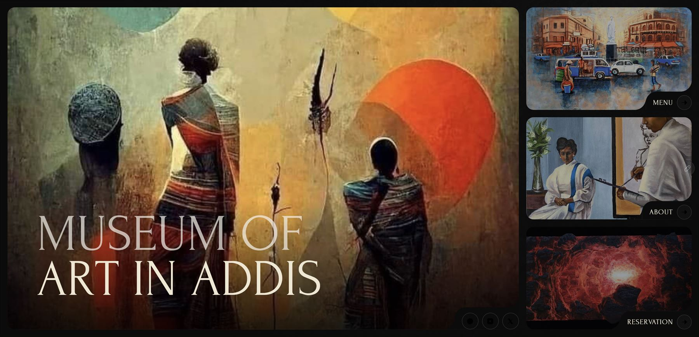
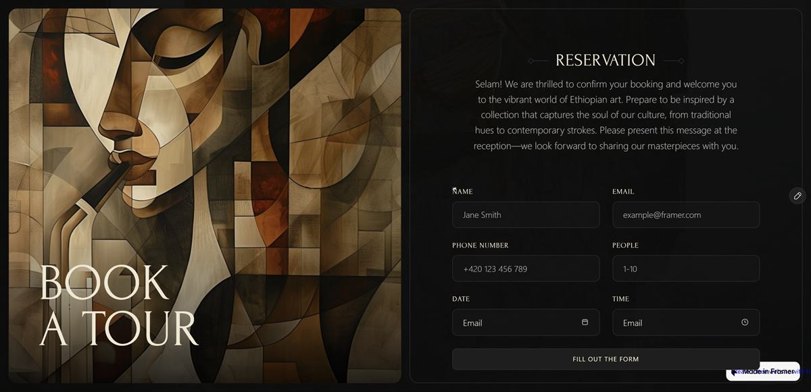
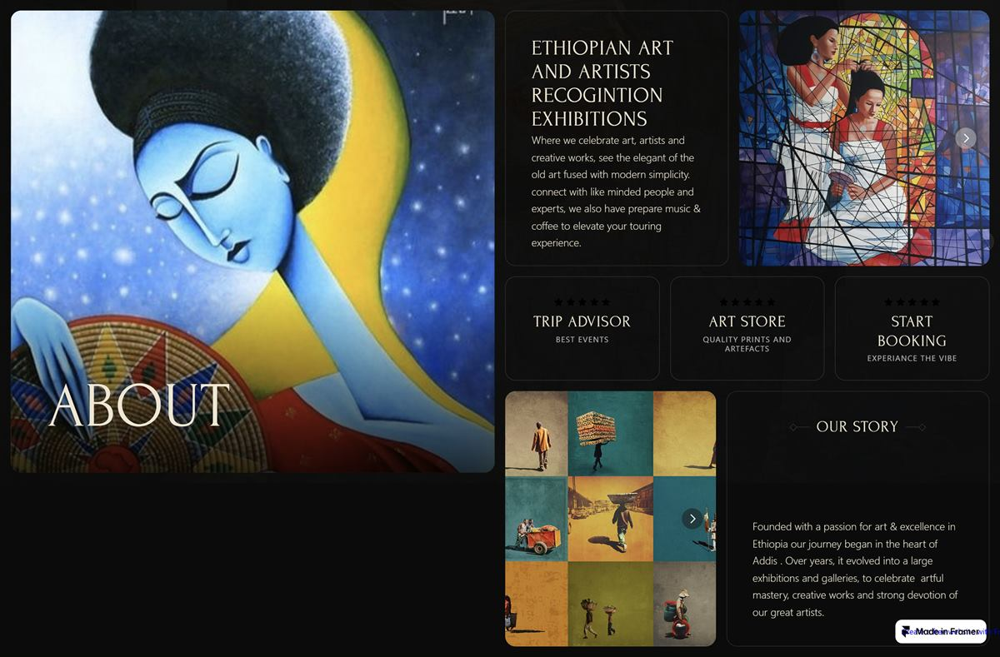
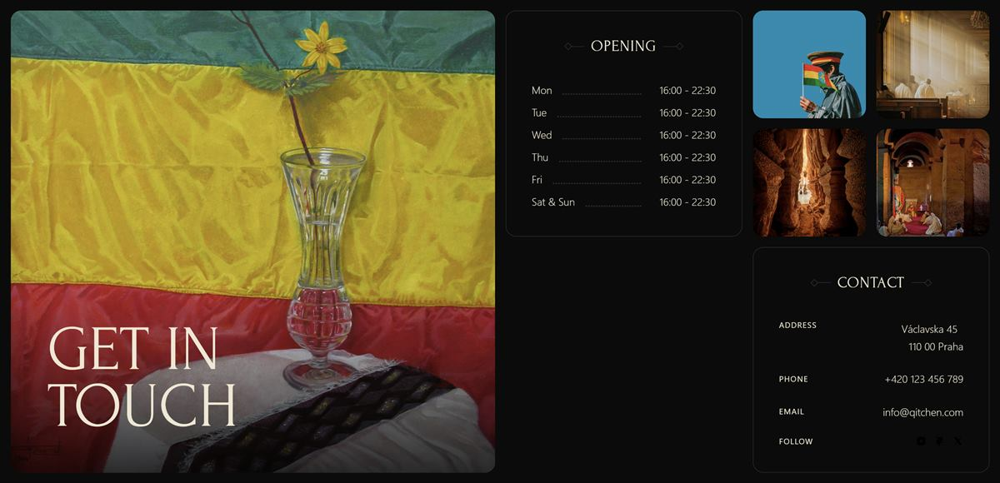
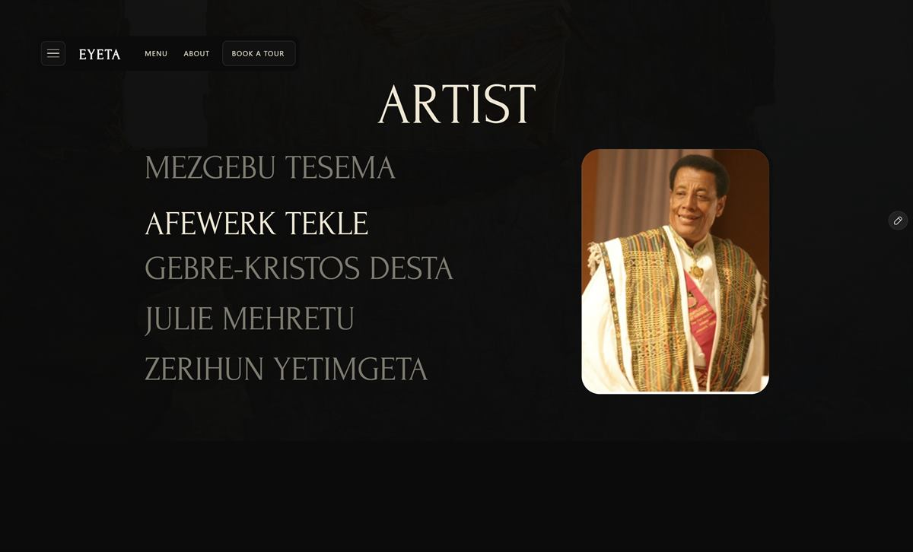

“Introduce the museum and its artists online — a first presence that feels like the institution and can grow with it.”
Arts institution · Framer
Museum of Art in Addis
The problem: Give a cultural institution its first real digital presence — one that could grow without losing its voice.

From brief to build.
A four-page site: an art-led home, a split-screen menu pairing a painting with the artist index (Artist / Art Work / Exhibitions tabs), an about page with the institution’s story, and a book-a-tour reservation flow.
How I approached it.
A clean, modern design organises the museum’s story, exhibitions and visiting information into clear sequences. The interface behaves like the building: quiet rooms, strong walls, art as the only loud element.
What made it hard
- Introducing an institution with no existing digital footprint.
- Presenting a dense artist catalogue without flattening it into a grid.
- Keeping the reservation step feeling cultural rather than transactional.
Design decisions
The calls I made, and why.
The artwork is the only colour
A near-black canvas with ivory type lets Ethiopian modernism carry every page — the interface never competes with the collection.
A split-screen menu
A full-height painting sits beside the artist index, so browsing the catalogue feels like walking a wing, not scrolling a table.
Three tabs, no extra pages
Artist / Art Work / Exhibitions tabs reframe the same collection for three intents without multiplying pages.
Reservation as ritual
“Book a Tour” keeps its gallery voice — the form sits beside a cubist portrait with a welcome note, so the conversion step belongs to the museum.
The result
What it added up to.
A professional first impression with a durable foundation — a digital presence the institution can extend into a richer ecosystem.
6weeks from brief to launch
4pages, home to reservation
3ways into the collection
100%responsive, built in Framer




Live preview
Explore the real site.
This is the actual website running inside the frame — scroll it, click through it, or open it in a new tab.
Keep reading
Start a project
Tell me what you are building.
Send the shape of the idea — the audience, the constraint, the deadline you are working to. You get a reply within one working day, and a written scope before any work starts.
- yohannesassefa17@gmail.com
- +251 92 124 4796
- Addis Ababa, Ethiopia · GMT+3